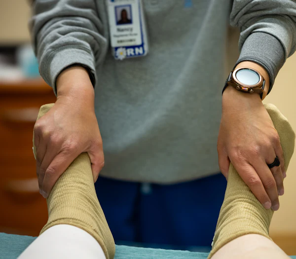

Tê bì, đau nhức cổ tay – bàn tay về đêm?
Có thể bạn đang mắc Hội chứng ống cổ tay. Khám sớm để điều trị dứt điểm, tránh teo cơ và mất cảm giác ngón tay vĩnh viễn.
Vì sao chọn Hà Thành?
Đội ngũ bác sĩ chuyên khoa Ngoại nhiều năm công tác tại các bệnh viện công lớn, trực tiếp thăm khám và điều trị Hội chứng ống cổ tay bằng đầy đủ phương pháp: bảo tồn, tiêm phong bế, phẫu thuật mở và phẫu thuật nội soi.
Tư vấn tận tình
Bác sĩ lắng nghe, giải thích rõ nguyên nhân, mức độ bệnh và các lựa chọn điều trị.
Thăm khám chuyên sâu
Nghiệm pháp lâm sàng và cận lâm sàng phù hợp, phân biệt với bệnh lý cột sống cổ.
Điều trị hiệu quả
Phác đồ cá nhân hóa, ưu tiên ít xâm lấn, hồi phục nhanh, sớm trở lại sinh hoạt.
Dấu hiệu Hội chứng ống cổ tay
Đánh dấu những triệu chứng bạn đang gặp – chỉ mất 30 giây để biết bạn có nên đi khám hay không
Hãy đánh dấu các triệu chứng bạn đang gặp để xem gợi ý.
Đặt lịch khámNguyên nhân & đối tượng dễ mắc
Ống cổ tay là “đường hầm” hẹp ở cổ tay, bên trong có dây thần kinh giữa và các gân gấp ngón tay. Khi đường hầm bị thu hẹp hoặc gân bị viêm, phù nề, dây thần kinh giữa bị chèn ép gây tê bì, đau và yếu bàn tay.
Dân văn phòng
Gõ phím, dùng chuột nhiều giờ liền, cổ tay gập hoặc ngửa liên tục.
Nội trợ, việc nhà
Băm chặt, vắt giặt, bế con… lặp đi lặp lại động tác cầm nắm, xoay cổ tay.
Mang thai, sau sinh
Thay đổi nội tiết gây giữ nước, phù nề mô mềm trong ống cổ tay.
Lao động tay chân
Thợ cơ khí, thợ may, nông dân… dùng lực tay nhiều, cầm máy rung thường xuyên.
Yếu tố làm tăng nguy cơ
- Nữ giới (gấp khoảng 3 lần nam giới), tuổi trung niên
- Tiểu đường, suy giáp, viêm khớp dạng thấp
- Gãy xương, chấn thương vùng cổ tay
- Thừa cân, béo phì; bệnh thận mạn
Để lâu, Hội chứng ống cổ tay có thể gây
-
Mất cảm giác đầu ngón tay
Tê bì liên tục, không còn cảm nhận nóng – lạnh, dễ bị bỏng, đứt tay mà không biết.
-
Teo cơ mô cái
Vùng gốc ngón cái lõm xuống, bàn tay yếu, không cầm nắm chắc đồ vật.
-
Giảm khả năng lao động, sinh hoạt
Khó cài cúc áo, cầm đũa, viết, gõ phím; mất ngủ kéo dài vì đau về đêm.
-
Tổn thương thần kinh khó hồi phục
Chèn ép kéo dài làm dây thần kinh giữa tổn thương nặng – điều trị muộn, kể cả phẫu thuật, khó phục hồi hoàn toàn.
Đừng đợi đến khi teo cơ mới điều trị – phát hiện sớm, điều trị nhẹ nhàng hơn.
Đặt lịch khám ngayPhương pháp điều trị
Bác sĩ lựa chọn phương pháp phù hợp với mức độ bệnh của từng người – ưu tiên ít xâm lấn, an toàn, hồi phục nhanh
Điều trị bảo tồn
Áp dụng cho trường hợp nhẹ, mới khởi phát, chưa yếu hay teo cơ.
Đeo nẹp giữ cổ tay ở tư thế trung tính (đặc biệt khi ngủ), dùng thuốc giảm đau – chống viêm theo chỉ định, kết hợp vật lý trị liệu và bài tập trượt gân – thần kinh. Bác sĩ hướng dẫn điều chỉnh tư thế làm việc, sinh hoạt để giảm áp lực lên cổ tay.
Phù hợp khi: tê bì từng lúc, chủ yếu về đêm, chưa yếu tay.

Tiêm phong bế ống cổ tay
Giảm viêm, giảm phù nề quanh dây thần kinh giữa – cải thiện triệu chứng nhanh.
Bác sĩ tiêm một lượng nhỏ thuốc kháng viêm corticoid vào ống cổ tay. Thủ thuật diễn ra trong vài phút tại phòng thủ thuật vô khuẩn, giúp giảm đau, giảm tê rõ rệt ở nhiều người bệnh. Số lần tiêm được bác sĩ giới hạn để đảm bảo an toàn.
Phù hợp khi: điều trị bảo tồn chưa đỡ hoặc cần giảm triệu chứng nhanh.
Phẫu thuật mở giải phóng ống cổ tay
Phương pháp kinh điển, hiệu quả cao, giải phóng hoàn toàn dây thần kinh giữa.
Bác sĩ rạch một đường nhỏ khoảng 2–4 cm ở lòng bàn tay, cắt dây chằng ngang cổ tay để giải phóng chèn ép. Phẫu thuật thực hiện dưới gây tê, thời gian khoảng 20–30 phút, đa số người bệnh có thể về trong ngày.
Phù hợp khi: tê bì nặng, liên tục, đã yếu hoặc teo cơ mô cái, điều trị bảo tồn không hiệu quả.
Phẫu thuật nội soi ống cổ tay
Xâm lấn tối thiểu – vết mổ nhỏ, ít đau, hồi phục nhanh.
Qua một vết rạch khoảng 1–2 cm ở nếp gấp cổ tay, bác sĩ đưa ống nội soi vào quan sát và cắt dây chằng ngang cổ tay. Ít tổn thương mô mềm, sẹo nhỏ, người bệnh sớm quay lại sinh hoạt và làm việc.
Phù hợp khi: có chỉ định phẫu thuật và mong muốn hồi phục nhanh, thẩm mỹ cao – bác sĩ sẽ tư vấn phương pháp phù hợp với từng trường hợp.
Phục hồi sau điều trị
Tập phục hồi đúng cách giúp bàn tay khỏe lại nhanh và hạn chế tái phát.
Sau điều trị, người bệnh được hướng dẫn chăm sóc vết mổ, bài tập vận động ngón tay – cổ tay và lịch tái khám định kỳ. Phần lớn người bệnh sinh hoạt nhẹ nhàng được sau vài ngày, cắt chỉ sau khoảng 10–14 ngày.
Đồng hành: bác sĩ theo dõi sát quá trình phục hồi, hỗ trợ qua hotline và Zalo.
Phòng khám Ngoại Hà Thành – Nơi gửi trọn niềm tin vì sức khỏe
Phòng khám Ngoại Hà Thành (Hà Thành Medical Center) là địa chỉ khám và điều trị bệnh lý Ngoại khoa uy tín tại Ninh Bình, với đội ngũ bác sĩ chuyên khoa nhiều năm công tác tại các bệnh viện công lớn và cơ sở vật chất hiện đại. Với phương châm “Chọn nghề y – Trọn y đức”, chúng tôi cam kết chuyên môn vững vàng, can thiệp an toàn, lành thương nhanh chóng.
-
An toàn
Quy trình khám và can thiệp chuẩn y khoa, phòng thủ thuật vô khuẩn, dụng cụ tiệt trùng theo quy định.
-
Tận tâm
Bác sĩ trực tiếp thăm khám, giải thích rõ ràng tình trạng bệnh và phương án điều trị.
-
Đồng hành cùng bạn
Hướng dẫn chăm sóc, phục hồi chức năng và tái khám cho đến khi bàn tay khỏe lại.
Bác sĩ chuyên khoa
Năm kinh nghiệm
Lượt khám & điều trị
Ngày làm việc mỗi tuần
Ưu điểm điều trị tại Hà Thành
Chăm sóc chuyên sâu về Hội chứng ống cổ tay – an toàn, nhẹ nhàng, hiệu quả
Bác sĩ chuyên khoa Ngoại
Bác sĩ nhiều năm công tác tại các bệnh viện công lớn trực tiếp thăm khám, làm thủ thuật và phẫu thuật.
Chẩn đoán đúng nguyên nhân
Kết hợp nghiệm pháp lâm sàng và cận lâm sàng phù hợp, phân biệt với thoái hóa cột sống cổ, viêm gân để điều trị đúng bệnh.
Gây tê tại chỗ, nhẹ nhàng
Thủ thuật và phẫu thuật thực hiện dưới gây tê, người bệnh tỉnh táo, hạn chế tối đa cảm giác đau.
Nhanh gọn, về trong ngày
Phẫu thuật giải phóng ống cổ tay chỉ khoảng 20–30 phút, đa số người bệnh có thể về nhà trong ngày.
Vô khuẩn, an toàn
Phòng thủ thuật đạt chuẩn vô khuẩn, dụng cụ tiệt trùng, theo dõi sát trước – trong – sau can thiệp.
Chi phí minh bạch
Tư vấn rõ phác đồ và chi phí trước khi điều trị, không phát sinh ngoài thỏa thuận.
Đội ngũ bác sĩ
Bác sĩ chuyên khoa giàu kinh nghiệm, tận tâm đồng hành cùng người bệnh
BS.CKII Nguyễn Văn Hùng
Giám đốc chuyên môn – Ngoại khoaHơn 15 năm kinh nghiệm phẫu thuật Ngoại khoa – Chấn thương chỉnh hình, chuyên phẫu thuật bàn tay.
BS.CKI Trần Thị Mai
Bác sĩ Ngoại khoa – Phục hồi chức năngChuyên điều trị bảo tồn, tiêm phong bế và hướng dẫn phục hồi chức năng bàn tay sau điều trị.
ThS.BS Lê Minh Đức
Bác sĩ Chấn thương chỉnh hìnhThực hiện phẫu thuật nội soi giải phóng ống cổ tay và các phẫu thuật bàn tay.
BS. Phạm Thu Hà
Bác sĩ Gây mê hồi sứcĐảm bảo vô cảm an toàn, theo dõi sát người bệnh trong và sau thủ thuật.
Quy trình khám & điều trị
5 bước rõ ràng, nhanh gọn – người bệnh được hướng dẫn tận tình từ khi đặt lịch đến khi tái khám
Đặt lịch & tiếp đón
Đặt lịch qua hotline, Zalo hoặc form. Nhân viên tiếp đón, hướng dẫn thủ tục nhanh gọn.
Thăm khám lâm sàng
Bác sĩ hỏi bệnh, làm nghiệm pháp Tinel, Phalen, đánh giá cảm giác và sức cơ bàn tay.
Cận lâm sàng khi cần
Chỉ định siêu âm, X-quang hoặc đo điện cơ khi cần để xác định mức độ chèn ép thần kinh.
Tư vấn phác đồ
Giải thích rõ tình trạng bệnh, phương pháp điều trị phù hợp và chi phí trước khi thực hiện.
Điều trị & tái khám
Thực hiện điều trị, hướng dẫn chăm sóc tại nhà và hẹn lịch tái khám theo dõi phục hồi.
Đặt lịch khám
Để lại thông tin, nhân viên phòng khám sẽ gọi lại xác nhận lịch hẹn và tư vấn cho bạn
Người bệnh nói gì về chúng tôi
Chia sẻ của người bệnh đã thăm khám và điều trị Hội chứng ống cổ tay tại Phòng khám Ngoại Hà Thành. Kết quả điều trị có thể khác nhau tùy cơ địa và mức độ bệnh của mỗi người.
Cơ sở vật chất
Không gian khám chữa bệnh sạch sẽ, trang thiết bị hiện đại, quy trình vô khuẩn nghiêm ngặt


Câu hỏi thường gặp
Giải đáp những thắc mắc phổ biến về Hội chứng ống cổ tay và quá trình điều trị
Hội chứng ống cổ tay có tự khỏi được không?
Một số trường hợp nhẹ, như ở phụ nữ mang thai, có thể giảm sau khi nguyên nhân mất đi. Tuy nhiên đa số trường hợp bệnh nặng dần nếu không điều trị, dẫn đến teo cơ và mất cảm giác. Bạn nên đi khám khi tê bì kéo dài trên 2 tuần.
Khi nào cần phải phẫu thuật?
Bác sĩ chỉ định phẫu thuật khi bệnh ở mức độ nặng: tê bì liên tục, yếu hoặc teo cơ mô cái, đo điện cơ cho thấy chèn ép nặng, hoặc đã điều trị bảo tồn 2–3 tháng không cải thiện.
Phẫu thuật có đau không? Bao lâu thì được về nhà?
Phẫu thuật thực hiện dưới gây tê nên người bệnh không đau trong lúc mổ. Thời gian mổ khoảng 20–30 phút, đa số người bệnh có thể về nhà trong ngày và chỉ cần dùng thuốc giảm đau thông thường trong vài ngày đầu.
Sau mổ bao lâu thì sinh hoạt, làm việc lại được?
Người bệnh có thể cử động nhẹ ngón tay ngay sau mổ. Công việc văn phòng nhẹ thường trở lại sau 1–2 tuần; công việc cần dùng lực tay nhiều cần khoảng 4–6 tuần. Bác sĩ sẽ hướng dẫn cụ thể theo từng trường hợp.
Tiêm corticoid vào cổ tay có hại không?
Tiêm corticoid tại chỗ do bác sĩ chuyên khoa thực hiện với liều phù hợp là phương pháp an toàn, giúp giảm viêm, giảm tê nhanh. Số lần tiêm được giới hạn để tránh tác dụng phụ; nếu tiêm không cải thiện, bác sĩ sẽ tư vấn phương pháp khác.
Chi phí khám và điều trị là bao nhiêu?
Chi phí phụ thuộc vào mức độ bệnh và phương pháp điều trị phù hợp. Vui lòng gọi hotline 098 381 66 26 hoặc để lại thông tin để được tư vấn chi tiết – phòng khám luôn báo rõ chi phí trước khi điều trị.
Liên hệ
Phòng khám Ngoại Hà Thành – Số 52, Đường Tuệ Tĩnh, Phường Nam Thành, TP. Ninh Bình
Hotline
Giờ làm việc
Thứ 2 – Thứ 6: 8h00 – 22h00
Thứ 7 – Chủ nhật: 8h00 – 21h00